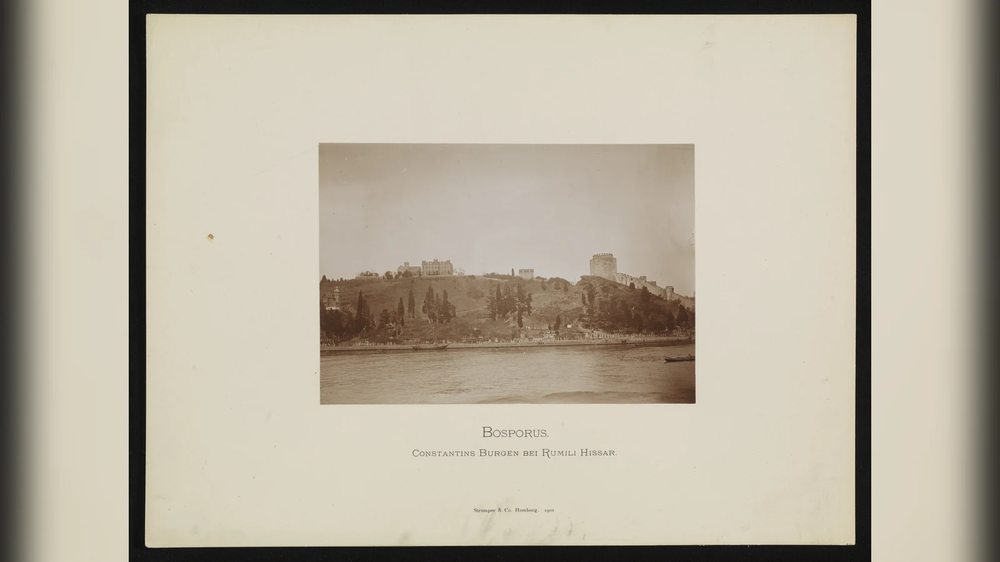
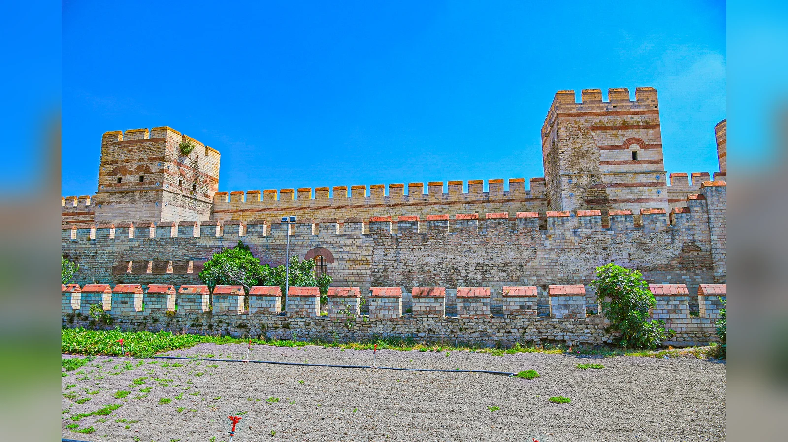
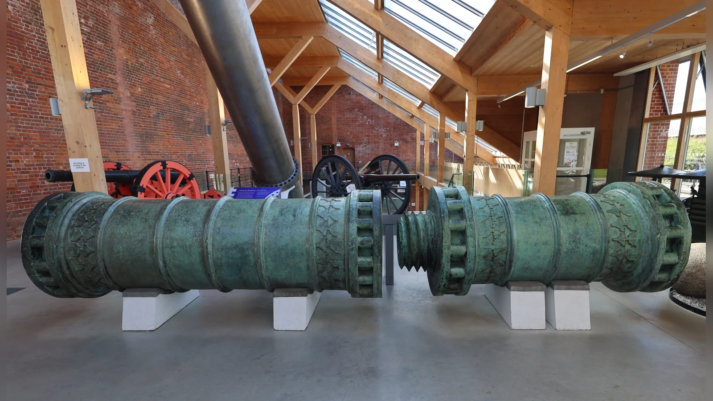
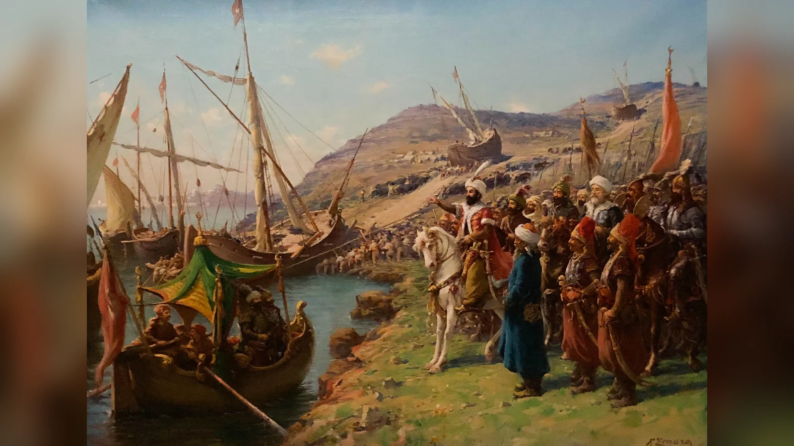

İstanbul 1453’te tek bir “mucize silah” sayesinde düşmedi. II. Mehmed’in başarısı, kuşatmadan aylar önce başlayan diplomatik ve lojistik hazırlığın, Boğaz üzerindeki baskının, güçlü fakat kusursuz olmayan topçunun, büyük bir kara ordusunun, giderek etkinleşen deniz ablukasının, lağım ve kuşatma faaliyetlerinin ve haftalar süren yıpratmanın aynı hedefe yöneltilmesinden doğdu. Theodosius surları daha önce defalarca kuşatmaya direnmişti ve 1453’te de Osmanlı saldırılarını haftalar boyunca durdurdu. Şehir topların ilk ateşinde çökmedi; Haliç’e gemilerin indirilmesinden hemen sonra teslim olmadı; son hücuma kadar savunuldu. Bu nedenle İstanbul’un fethini anlamanın anahtarı tek bir kahramanlık sahnesini değil, Mehmed’in farklı askerî araçları aynı anda kullanabilmesini, başarısız olan yöntemlerin ardından yenilerini devreye sokmasını ve savunmanın telafi edemeyeceği kadar uzun süre baskıyı sürdürebilmesini görmektir.
Bu yaklaşım Fatih Sultan Mehmed’in rolünü küçültmez; tersine onu daha anlaşılır hâle getirir. Yirmi bir yaşındaki hükümdarın asıl başarısı yalnız büyük toplar döktürmesi veya gemileri karadan yürütmesi değildi. Rumeli Hisarı’nın inşasından iaşe hazırlığına, donanmanın güçlendirilmesinden kuşatma topçusuna kadar farklı unsurları tek stratejinin parçalarına dönüştürmesiydi. Fakat fetih tek kişinin iradesinin maddi dünyayı kendiliğinden değiştirdiği bir hikâye de değildir. Topları döken ustalar, yolları hazırlayan işçiler, ağır silahları çeken ekipler, hendeklere yaklaşan askerler, lağımcılar, denizciler ve ordunun haftalarca beslenmesini sağlayan lojistik düzen olmadan hükümdarın planı uygulanamazdı.
1453’ün gerçek hikâyesi tam da bu nedenle popüler efsanelerden daha etkileyicidir. Bir tarafta kaynakları sınırlı fakat dünyanın en güçlü tahkimat sistemlerinden birine yaslanan Bizans savunması, diğer tarafta çok daha büyük kaynakları olan fakat surları aşmak, Haliç’e girmek ve deniz ablukasını işler hâle getirmek zorunda olan Osmanlı ordusu vardı. Sonucu belirleyen tek bir hamlenin kusursuzluğu değil, Osmanlıların haftalar boyunca baskıyı sürdürebilmesi ve savunmanın kayıplarını aynı ölçüde telafi edememesiydi.
İstanbul 1453’te Neden Bu Kadar Önemliydi?
Konstantinopolis 1453’e gelindiğinde artık I. Justinianus çağının devasa Doğu Roma başkenti değildi. Bizans İmparatorluğu’nun siyasi ve askerî gücü yüzyıllar boyunca daralmış, özellikle 1204’teki Latin işgali şehre ve imparatorluğa ağır darbe vurmuştu. 1261’de şehir geri alınmış olsa da eski ekonomik ve askerî üstünlük bütünüyle geri gelmedi. On beşinci yüzyıl ortasında imparatorluğun elindeki topraklar Konstantinopolis, çevresindeki sınırlı bölgeler ve Mora’daki bazı alanlarla bağlantılı kırılgan bir yapıya dönüşmüştü. Buna rağmen şehrin önemi nüfusundan veya Bizans’ın kalan askerî gücünden çok daha büyüktü.
Boğaziçi üzerindeki konumu Karadeniz ile Akdeniz dünyası arasındaki geçişi kontrol eden stratejik bir düğüm oluşturuyordu. Osmanlılar Anadolu ve Rumeli’de geniş topraklara sahipken Konstantinopolis bu iki ana bölgenin arasında başka bir hanedanın başkenti olarak duruyordu. Şehir Osmanlı topraklarını fiziksel olarak ikiye bölen aşılmaz bir duvar değildi; Osmanlılar Boğaz’ı zaten geçebiliyor ve iki yakada hâkimiyet kurabiliyordu. Fakat merkezî bir imparatorluk açısından Boğaz üzerindeki bağımsız siyasi merkezin varlığı askerî, diplomatik ve sembolik bir sorun yaratıyordu.
Bizans sarayının Osmanlı taht mücadelelerinde kullanılabilecek hanedan mensuplarını barındırması da Mehmed açısından önemliydi. İstanbul’da bulunan Orhan Çelebi’nin Osmanlı tahtına alternatif olarak kullanılabilmesi ihtimali genç hükümdarın zihninde soyut bir korku değildi. Mehmed’in ilk saltanat tecrübesi ve II. Murad dönemindeki krizler, rakip bir şehzadenin dış güçlerin desteğiyle siyasi araca dönüşebileceğini göstermişti. Konstantinopolis’in alınması bu tür bir baskı merkezini de ortadan kaldıracaktı.
Şehrin sembolik değeri bunların ötesindeydi. Konstantinopolis Roma imparatorluk geleneğinin en önemli başkentlerinden biriydi. Şehri ele geçirmek Mehmed’e yalnız stratejik merkez değil, evrensel hükümdarlık iddiasını besleyebileceği olağanüstü bir başkent sağlayacaktı. Fetihten sonra İstanbul’u yeniden nüfuslandırma ve imparatorluk merkezi hâline getirme siyaseti, 1453’ün yalnız askerî hedef olmadığını açıkça gösterir.
Burada önemli bir ayrım gerekir. “Bizans zaten bitmişti, şehir kendiliğinden düşecekti” demek, kuşatmanın sertliğini açıklamaz. Bizans’ın kaynakları sınırlıydı; fakat surlar, savunma tecrübesi, Haliç zinciri ve İtalyan savaşçıların desteği şehri hâlâ son derece zor hedef yapıyordu. Osmanlı üstünlüğü başlangıçta sonucu daha muhtemel hâle getiriyordu, fakat sonucu otomatik hâle getirmiyordu. Fetihteki başarıyı ölçebilmek için karşıdaki savunmanın zayıflığını olduğu kadar direnme kapasitesini de görmek gerekir.
II. Mehmed Fetih İçin Nasıl Hazırlandı?

II. Mehmed 1451’de ikinci kez tahta çıktığında İstanbul meselesini ertelememeye kararlıydı. Hazırlığın en görünür işareti 1452’de Boğaz’ın Avrupa yakasında inşa edilen Rumeli Hisarı oldu. Anadolu Hisarı’nın karşısına yerleştirilen yeni kale, Boğaz’ın en dar kesimlerinden birini baskı altına alıyor ve Karadeniz’den Konstantinopolis’e ulaşabilecek deniz trafiği üzerinde Osmanlı kontrolünü güçlendiriyordu. Hisarın kısa sürede tamamlanması da yaklaşan kuşatmanın gerektirdiği insan ve malzeme seferberliğinin erken bir örneğiydi.
Rumeli Hisarı’nı “Boğaz’ı tek başına tamamen kapatan sihirli kilit” gibi düşünmemek gerekir. Dönemin topçusunun hareketli gemileri vurma kapasitesi sınırsız değildi. Yine de kale Osmanlıların geçişi denetleme iradesini açıkça gösterdi ve bu iradenin yaptırımsız olmadığını kanıtladı. Emirlere uymayan bir Venedik gemisinin top ateşiyle batırılması, Boğaz kontrolünün yalnız sembolik olmadığını ortaya koydu. Mehmed kuşatmaya başlamadan önce şehrin Karadeniz bağlantısını daha riskli hâle getiriyor, kendi Anadolu-Rumeli geçişini ise güvence altına almaya çalışıyordu.
Hazırlık yalnız kalelerden ibaret değildi. Kuşatma için toplar döküldü, mühimmat biriktirildi, ağır topların geçebileceği yollar hazırlandı, hayvan ve insan gücü seferber edildi. Urban ya da Orban adıyla bilinen top ustasının Mehmed’in hizmetine girmesi kaynaklarda öne çıkar. Ancak Osmanlı topçuluğunu tek bir yabancı ustanın icadına indirgemek yanlıştır. Osmanlılar 1453’ten önce de ateşli silahlar kullanıyor, kendi topçu tecrübesini geliştiriyordu. Urban’ın büyük bombardıman toplarındaki rolü önemli olsa da kuşatmada kullanılan topçu parkı farklı büyüklüklerde çok sayıda silahtan oluşuyordu.
Ağır top üretmek kadar onu savaş alanına ulaştırmak da teknoloji meselesiydi. Çok büyük bir bombardıman topunun hareket ettirilmesi için yolun düzeltilmesi, köprülerin ve geçişlerin hazırlanması, onlarca hayvan ile yüzlerce insanın koordinasyonu gerekiyordu. Bu ayrıntı fetih anlatısında çoğu zaman görünmez kalır. Oysa teknoloji yalnız nesnenin kendisi değildir; nesneyi çalıştıran altyapı da teknolojik üstünlüğün parçasıdır. Dev top Edirne’de kalmış olsaydı surlar üzerinde hiçbir etkisi olmayacaktı.
Donanma hazırlığı da Mehmed’in planının kritik parçasıydı. Konstantinopolis Marmara ile Haliç arasında bir yarımada üzerindeydi. Şehrin deniz bağlantısı kesilmedikçe dışarıdan yardım ulaşması mümkündü. Osmanlı donanması sayıca ciddi bir kuvvet oluşturmasına rağmen Akdeniz’in deneyimli İtalyan denizcileri karşısında aynı etkinliği her çatışmada gösteremeyecekti. Bu eksiklik kuşatma sırasında ortaya çıkacak, Mehmed’i Haliç sorununa farklı çözüm bulmaya zorlayacaktı.
Diplomatik ortam da hazırlığın parçasıydı. Avrupa devletlerinin kendi rekabetleri, yakın geçmişte Varna ve II. Kosova’da yaşanan yenilgiler, Papalık ile Ortodoks dünyası arasındaki kilise birliği tartışmaları ve bölgesel güçlerin hesapları Bizans’ın geniş çaplı yardım koalisyonu kurmasını zorlaştırdı. Bu, Mehmed’in bütün Avrupa’yı ustaca “tarafsızlaştırdığı” gibi aşırı bir iddiayı gerektirmez. Fakat kuşatma için seçilen anın askerî hazırlık kadar uluslararası şartlarla da ilgili olduğunu gösterir.
Bu açıdan hazırlık safhasının en önemli sonucu şudur: Fetih 6 Nisan’da surların önünde başlamadı. Kuşatmanın başarı ihtimali aylar önce Boğaz’ın kontrol altına alınması, topçunun hazırlanması, ordunun toplanması ve İstanbul’un dış yardıma erişiminin zorlaştırılmasıyla yükseltilmişti. Son hücumun gücü arkasındaki bu hazırlık kapasitesinden ayrı düşünülemez. Mehmed’in stratejik başarısını yalnız 29 Mayıs sabahına bakarak ölçmek, bir binanın yalnız çatısına bakıp nasıl ayakta kaldığını açıklamaya benzer.
İstanbul Nasıl Savunuluyordu?

Konstantinopolis’in kara savunmasının belkemiğini Theodosius surları oluşturuyordu. Beşinci yüzyılda şekillenen ve yüzyıllar boyunca onarılan bu sistem tek bir duvardan çok daha fazlasıydı. Hendek, dış sur ve daha güçlü iç sur birbirini destekliyor; saldırganın açık araziden başlayarak art arda savunma engellerini aşmasını gerektiriyordu. Topçu çağından önce sayısız saldırıyı durdurmuş bu tahkimat, 1453’te de eski ününü kolayca teslim etmedi.
Surların gücü Bizans’ın insan gücü sorununu tamamen çözmüyordu. XI. Konstantinos’un savunacağı şehir fiziksel olarak hâlâ çok büyüktü; buna karşılık fiilî savunmacı sayısı sınırlıydı. Kaynaklarda rakamlar farklılaşır. Birkaç bin Bizanslıya ek olarak Cenevizli, Venedikli ve başka Latin savaşçılar bulunuyordu. Yaklaşık yedi-sekiz bin kişilik toplam savunma gücü sık kullanılan bir çerçevedir, ancak kaynakların sayım yöntemleri aynı değildir. Şehrin sivil nüfusunu doğrudan asker sayısına çevirmek bu nedenle hatalıdır.
Savunmanın en önemli isimlerinden biri Cenevizli Giovanni Giustiniani Longo’ydu. Yanında getirdiği tecrübeli savaşçılarla kara surlarının en kritik kesimlerinde görev aldı. İmparator XI. Konstantinos da savunmanın içinde aktif rol oynadı. Katolik ve Ortodoks dünyası arasındaki ciddi gerilimlere rağmen kuşatma sırasında şehirde bulunan farklı gruplar ortak savunmaya katıldı. Bu birlik kusursuz değildi; ancak “Bizanslılar birbirleriyle kavga ederken şehir kolayca düştü” klişesi, savunmanın haftalarca sürmesini açıklayamaz.
Haliç girişindeki büyük zincir deniz savunmasının merkezindeydi. Zincir Osmanlı donanmasının Haliç’e doğrudan girerek surların daha zayıf deniz tarafını baskı altına almasını engelliyordu. Galata’daki Ceneviz kolonisi ise karmaşık bir konumdaydı; resmî tarafsızlık arayışı ile bireysel Cenevizlilerin Bizans savunmasına katılması aynı anda görülebiliyordu. Bu karmaşa, 1453’te “Hristiyan dünya ile Osmanlı” biçiminde iki yekpare blok bulunduğu düşüncesini de düzeltir.
Savunmacılar Osmanlı topçusunun açtığı hasarı gece boyunca taş, toprak, kereste ve başka malzemelerle onarmaya çalıştı. Bu ayrıntı çok önemlidir. Eğer büyük toplar surları her atışta geri dönülmez biçimde yok etmiş olsaydı kuşatma haftalar sürmezdi. Osmanlı ateş gücü surların dayanıklılığını aşındırıyor, savunma ise sürekli kendini yeniliyordu. 1453’ün mücadelesi teknoloji ile eski tahkimat arasında tek taraflı hesaplaşma değil, yıkma ve onarma kapasitesinin yarışıydı.
Savunmanın temel sorunu bu yarışın uzun vadede eşit olmamasıydı. Osmanlı ordusu daha fazla insanı, mühimmatı ve malzemeyi sahaya sürebiliyordu. Bizans tarafındaki her kayıp daha pahalıydı; çünkü yerine yenisini koymak zordu. Bir sur parçası yeniden örülebilir, fakat tecrübeli bir savaşçının kaybı aynı hızla telafi edilemezdi. Kuşatma uzadıkça bu asimetri giderek daha önemli hâle geldi.
Kuşatma Nasıl Başladı ve Nasıl İlerledi?
Osmanlı ordusu Nisan 1453 başında Konstantinopolis önlerine ulaştı. Kuşatmanın başlangıcı genellikle 6 Nisan kabul edilir; 29 Mayıs’taki son hücumla birlikte süre kaynaklarda yaklaşık 53–54 gün olarak ifade edilir. Başlangıç gününün nasıl sayıldığına göre bir günlük farklılık görülebilir. Esas olan, kuşatmanın yaklaşık yedi buçuk hafta sürmüş olmasıdır.
Mehmed ana baskıyı kara surlarına yöneltti. Özellikle topografik olarak daha elverişsiz ve yoğun ateş altında bırakılabilecek kesimler hedeflendi. Toplar surları döverken Osmanlı birlikleri hendekleri doldurmaya, yaklaşma yolları oluşturmaya ve açılan gediklerden yararlanmaya çalışıyordu. İlk büyük saldırılar sonuç vermedi. Savunmacılar gedikleri kapatıyor, saldırıları geri püskürtüyor ve Osmanlıların sayı üstünlüğünü dar geçitlerde etkisizleştirebiliyordu.
Bu başarısızlıklar Mehmed’in stratejisinin değişmeden uygulanmadığını gösterir. Kuşatma boyunca topçu, doğrudan hücum, deniz baskısı, lağım faaliyetleri ve Haliç’e girme girişimleri birbirini tamamladı. Bazı yöntemler başarısız oldu; bazıları sınırlı sonuç verdi; bazıları savunmanın kuvvetlerini yeni bölgelere dağıtmasına yol açtı. Osmanlı üstünlüğünün önemli tarafı, tek bir yöntemin başarısızlığından sonra kuşatmayı sona erdirmek zorunda kalmamasıydı.
Bizans tarafı için zamanın farklı anlamı vardı. Her geçen gün Batı’dan yardım gelme ihtimali umut yaratabiliyor, fakat yiyecek, insan gücü ve mühimmat üzerindeki baskı da artıyordu. Savunmacıların kayıpları Osmanlılar kadar kolay telafi edilemiyordu. Osmanlı ordusu da kayıp veriyor, moral sorunları yaşıyor ve kuşatmanın uzamasının siyasi riskini taşıyordu; yani zaman saldırgan için sınırsız değildi. Büyük bir yardım filosunun gelmesi veya Balkanlarda başka bir krizin çıkması Mehmed’in durumunu değiştirebilirdi.
Çandarlı Halil Paşa’nın kuşatmanın sürdürülmesi konusundaki ihtiyatı da bu risk ortamında anlam kazanır. Onun yaklaşımını basitçe “fethe karşı çıkmak” veya daha sonraki suçlamalar üzerinden “ihanet” şeklinde okumak yerine, II. Murad döneminde büyük Haçlı seferlerini yaşamış tecrübeli bir devlet adamının uluslararası müdahale ihtimalinden çekinmesi olarak değerlendirmek daha açıklayıcıdır. Zağanos Paşa gibi isimler ise kuşatmanın devamını destekliyordu. Mehmed’in kararı, sonucu önceden bilinen rahat bir tercih değil, ciddi siyasi risk taşıyan bir tercihti.
Bu nedenle 53 günlük süreç “kaçınılmaz sonucun beklenmesi” değildi. Kuşatma uzadıkça her iki taraf için de risk büyüyordu. Mehmed’in son hücuma yönelmesi, surların artık hiçbir direnci kalmadığı için değil, haftalar süren baskının savunmayı zayıflattığı ve daha fazla beklemenin kendi risklerini taşıdığı bir anda sonuç alma arayışıydı.
Şahi Topları Surları Gerçekten Nasıl Etkiledi?

İstanbul’un fethi denildiğinde en meşhur nesneler dev toplardır. Urban’ın döktüğü büyük bombardıman topu, sonraki anlatılarda neredeyse tek başına surları yıkan teknolojiye dönüşmüştür. Gerçekte büyük topların etkisi önemliydi, fakat kullanım güçlükleri de büyüklükleri kadar dikkat çekiciydi.
Çok ağır bir bombardıman topunu Edirne’den İstanbul önlerine taşımak başlı başına lojistik operasyondu. Yolun hazırlanması, çok sayıda hayvan ve insan gücü, topun sabitlenmesi ve mühimmatın taşınması gerekiyordu. Büyük taş güllelerin ateşlenmesi hızlı değildi. Namlunun soğuması, yeniden doldurulması ve topun konumunun korunması zaman alıyordu. Kaynaklarda topun ölçüsü, gülle ağırlığı ve atış sıklığı konusunda farklı rakamlar bulunduğundan tek bir teknik değeri tartışmasız gerçek gibi vermek güvenli değildir.
Büyük topun gösterişli oluşu daha küçük ve daha kullanışlı Osmanlı toplarını görünmez hâle getirmemelidir. Kuşatma topçusu farklı kalibrelerde silahlardan oluşuyordu. Daha küçük toplar daha sık ateş edebiliyor ve belirli hedeflere sürekli baskı uygulayabiliyordu. Osmanlı topçuluğunun gerçek gücü yalnız bir dev namludan değil, farklı silahların surlara uzun süre baskı uygulamasından doğuyordu.
Topların stratejik etkisi surları “bir anda ortadan kaldırmak” değil, savunmacıları sürekli onarım yapmaya zorlamak ve belirli kesimlerde saldırıya elverişli gedikler yaratmaktı. Savunmacılar gündüz oluşan hasarı gece kapatabiliyor, taş duvarın arkasında toprak ve kereste kullanarak yeni engeller oluşturabiliyordu. Bu yüzden topçu ile insan emeği arasında sürekli bir yarış vardı.
Buradan daha geniş bir sonuç çıkarabiliriz. Ateşli silahlar 1453’te Orta Çağ surlarını bir gecede işe yaramaz hâle getirmedi; fakat çok büyük kaynaklara sahip kuşatma ordusunun eski tahkimat üzerinde kesintisiz baskı kurma kapasitesini artırdı. İstanbul’un fethi topçunun yükselen öneminin çarpıcı örneğidir, ancak “top icat edildi ve surlar anlamsızlaştı” biçimindeki teknolojik determinizmin kanıtı değildir.
Üstelik surların kırılması ile şehrin ele geçirilmesi aynı şey değildir. Bir gedik açıldıktan sonra askerlerin hendekten geçmesi, dar ve savunulan alana girmesi, karşı saldırıyı aşması gerekiyordu. Savunmacılar geçici barikatlarla taş duvarın kaybettiği işlevin bir bölümünü yeniden yaratabiliyordu. Bu nedenle topçunun başarısı, piyadenin ve mühendisliğin başarısıyla tamamlanmadıkça sonuç vermiyordu.
Antik Bilge’nin burada vurguladığı nokta, “en büyük top kimdeydi?” sorusundan çok “topçuyu kim daha uzun süre işleyen bir kuşatma sisteminin parçası hâline getirebildi?” sorusunun açıklayıcı olduğudur. Mehmed’in avantajı tek bir silahın olağanüstü gücünde değil, ateş gücünü insan ve malzeme üstünlüğüyle birleştirebilmesindeydi.
20 Nisan Deniz Mücadelesi Neden Önemliydi?
20 Nisan’da Marmara’dan gelen birkaç Hristiyan gemisinin Osmanlı ablukasını aşarak Haliç’e ulaşması kuşatmanın en dramatik anlarından biriydi. Sayıca çok daha fazla Osmanlı gemisinin bu küçük grubu durduramaması, kara ordusundaki üstünlüğün denizde otomatik olarak tekrarlanmadığını gösterdi.
Yüksek bordalı, deneyimli mürettebata sahip büyük yelkenli gemiler ile Osmanlıların farklı tiplerdeki gemileri arasındaki çatışmada rüzgâr, akıntı, gemi yapısı ve yakın dövüş becerisi belirleyici oldu. Osmanlı donanması yardım gemilerini çevrelemeye çalıştı; ancak gemiler sonunda Haliç zincirinin açılmasıyla güvenli bölgeye girmeyi başardı. Olay Bizans tarafında moral yükseltirken Osmanlı tarafında ciddi hayal kırıklığı yarattı.
Bu çatışmanın önemi getirilen erzağın miktarından daha büyüktü. Eğer birkaç gemi Osmanlı ablukasını aşabiliyorsa daha büyük bir yardım filosu da teorik olarak şehre ulaşabilirdi. Mehmed açısından Haliç meselesinin çözülmesi artık yalnız taktik tercih değil, kuşatmanın güvenliği açısından daha acil ihtiyaç hâline geldi.
Osmanlı donanmasının başarısızlığı bize Mehmed’in kuvvetlerinin her alanda eşit üstünlüğe sahip olmadığını da hatırlatır. İstanbul’un fethi kusursuz işleyen savaş makinesinin hikâyesi değildir. Osmanlılar hata yaptı, saldırılar kaybetti ve denizde ağır prestij darbesi yaşadı. Fakat kuşatmayı kazandıran özelliklerden biri, bu başarısızlıklardan sonra yeni baskı yöntemleri geliştirebilmeleriydi.
Bu olay ayrıca kaynak üstünlüğü ile beceri üstünlüğünün aynı şey olmadığını gösterir. Osmanlılar çok sayıda gemiye sahip olabilir, fakat belirli deniz koşullarında tecrübeli Akdeniz denizcilerinin kullandığı gemileri durduramayabilirdi. Mehmed’in sonraki hamlesinin değeri de burada belirginleşir: denizde doğrudan çözemediği Haliç sorununu karadan dolaşarak çözmeye çalıştı.
Gemiler Karadan Haliç’e Nasıl İndirildi?

21 Nisan’ı 22 Nisan’a bağlayan geceyle ilişkilendirilen Osmanlı harekâtı, fethin en meşhur sahnelerinden biridir. Osmanlı gemilerinin Boğaz tarafından karaya çıkarılarak Galata’nın kuzeyindeki tepeler üzerinden Haliç’e taşındığı konusunda çağdaş ve yakın dönem kaynakları genel çerçevede örtüşür. Fakat tam güzergâh, kullanılan gemilerin kesin sayısı ve teknik ayrıntılar aynı değildir.
Popüler anlatıda gemiler bazen dev savaş gemileri olarak düşünülür. Oysa karadan taşınabilen gemilerin önemli bölümünün daha küçük ve hafif tekneler olması daha makuldür. Hazırlanan güzergâhta kızaklar, yağlanmış keresteler, insan ve hayvan gücü gibi yöntemlerin kullanıldığı anlatılır. “Bir gecede dağların üzerinden yüzlerce dev gemi geçirildi” gibi ifadeler, olayın zaten etkileyici olan gerçek niteliğini gereksiz yere abartır.
Harekâtın askerî sonucu önemlidir. Haliç zinciri artık Osmanlıların içeri girmesini tamamen engelleyemiyordu; çünkü Osmanlı gemileri zincirin arkasında ortaya çıkmıştı. Bizans savunması Haliç kıyılarına daha fazla dikkat ve kuvvet ayırmak zorunda kaldı. Osmanlılar Haliç üzerindeki düzenlemeler ve topçu baskısıyla savunmanın çevresini genişletebildi.
Bununla birlikte “gemiler karadan indi, İstanbul düştü” demek kronolojiyi bile açıklamaz. Gemiler Haliç’e girdikten sonra şehir bir aydan fazla direnmeye devam etti. Osmanlıların Haliç’teki varlığı savunmayı zorlaştırdı ve psikolojik üstünlük sağladı; fakat kara surlarının aşılması hâlâ gerekiyordu. Son hücumun ana ağırlığı yine kara surlarındaydı.
Bu olay Mehmed’in liderliğini değerlendirmek için daha anlamlı örnek sunar. Hamlenin değeri gösterişinden değil, karşı tarafın güçlü savunma önlemini tamamen yok etmek yerine onu dolaşarak etkisini azaltmasından gelir. Zinciri kırmak mümkün değilse zincirin arkasına başka yoldan geçmek, kuşatma savaşında uyarlama yeteneğinin örneğidir.
Bu açıdan gemilerin karadan taşınmasının asıl önemi de burada yatıyor: Fetih planı tek çizgili değildi. Osmanlılar dirençle karşılaştıkça yeni araçlar devreye sokuyordu. Bu, “Mehmed en başından bütün kuşatmanın her dakikasını kusursuz biçimde planlamıştı” biçimindeki kahramanlık anlatısından daha gerçekçi ve aslında daha güçlü bir liderlik tablosudur. İyi komutanlık her şeyi önceden bilmek değil, beklenmeyen sorunlara cevap üretebilmektir.
Kuşatma Yalnız Toplarla mı Yürütüldü?
Toplar görsel olarak o kadar etkileyicidir ki 1453 kuşatmasının diğer mühendislik faaliyetleri çoğu zaman unutulur. Oysa Osmanlılar surların altına lağımlar açmaya, kuşatma kuleleri kullanmaya, hendekleri doldurmaya ve farklı noktalardan saldırı baskısı kurmaya çalıştı. Savunmacılar da bunlara karşı aktif tedbirler geliştirdi.
Lağım savaşında amaç surların altına tünel açarak temelleri çökertmek veya savunma hattının gerisine ulaşmaktı. Bizans tarafı karşı tüneller açarak Osmanlı lağımcılarını durdurmaya çalıştı. Bu yeraltı mücadelesi, kuşatmanın yalnız surların önündeki büyük hücumlardan ibaret olmadığını gösterir. Mühendislik bilgisi, keşif, kazı emeği ve karşı tedbirler doğrudan savaş kadar önemliydi.
Osmanlıların büyük kuşatma kulesi girişimi de kalıcı başarı getirmedi. Savunmacılar tehdidi ortadan kaldırabildi. Bu başarısızlıkların varlığı fetih anlatısını zayıflatmaz; çünkü Osmanlı zaferi her yöntemin işe yaramasından değil, işe yaramayan yöntemlere rağmen baskının sürdürülebilmesinden doğdu. Kuşatmayı anlamak için başarıların yanında başarısızlıkları da görmek gerekir.
Savunmacıların gece onarımları özellikle dikkat çekicidir. Gün içinde top ateşiyle açılan gedikler gece boyunca geçici tahkimatlarla kapatılıyor ve ertesi gün Osmanlılar aynı noktayı yeniden dövmek zorunda kalıyordu. Kuşatma bu açıdan büyük tüketim yarışına dönüştü. Osmanlı tarafı daha fazla insan, mühimmat ve malzemeyi sahaya sürebiliyordu; Bizans tarafı sınırlı kuvvetini sürekli farklı tehditlere yetiştirmek zorundaydı.
Fetihte teknoloji kadar organizasyonun önemli olduğunu gösteren nokta budur. Topa sahip olmak başka, onu haftalar boyunca ateşleyebilecek barut, gülle, bakım ve insan gücünü sağlamak başkadır. Tünel kazmak başka, uzun kazı için işçi, mühendis ve koruma düzeni kurmak başkadır. Mehmed’in üstünlüğü yalnız daha yeni araçlara sahip olmakta değil, bu araçları besleyecek daha büyük kaynak tabanına sahip olmaktaydı.
Kuşatma savaşının görünmeyen kahramanları tam da bu nedenle işçiler ve zanaatkârlardır. Savaş anlatıları hükümdarlar ile komutanları öne çıkarır, ancak hendek dolduran, yol açan, gülle taşıyan, top onaran, kazı yapan ve yiyecek dağıtan binlerce kişinin emeği olmadan büyük ordular birkaç gün içinde hareketsiz kalır. Mehmed’in liderliğini büyülü kişisel yetenek yerine bu büyük organizasyonu harekete geçirebilme kapasitesi üzerinden okumak tarihsel olarak daha sağlamdır.
Son Hücumdan Önce Savunma Neden Zayıfladı?
Mayıs sonuna gelindiğinde şehir hâlâ düşmemişti, fakat savunmanın üzerindeki baskı başlangıçtakinden farklıydı. Haftalar süren top ateşi surların belirli kesimlerini yıpratmış, sürekli nöbet ve onarım insan gücünü tüketmiş, Haliç’te Osmanlı varlığı savunulması gereken cepheyi genişletmişti. Dışarıdan beklenen büyük yardım ise gelmemişti.
Osmanlı tarafında da kuşatmanın uzamasından kaynaklanan baskı vardı. Kaynaklar savaş meclislerinde kuşatmanın sürdürülmesi konusunda farklı görüşlerin bulunduğunu aktarır. Çandarlı Halil Paşa’nın daha ihtiyatlı tavrıyla Zağanos Paşa gibi kuşatmanın devamını savunan isimler arasındaki gerilim, Mehmed’in kararının siyasi risk taşıdığını gösterir. Batı’dan yardım gelmesi ihtimali veya orduda moral kaybı, sonsuza kadar beklemeyi mümkün kılmıyordu.
Mehmed son genel hücumdan önce topçu ateşini yoğunlaştırdı ve ordusunu hazırladı. Savunmacılar da büyük saldırının yaklaştığını biliyordu. 28 Mayıs gecesi şehirde dinî törenler yapıldı; Ayasofya’daki son büyük ayin sonraki hafızada fethin en sembolik sahnelerinden biri hâline geldi.
Burada “savunma artık çökmüştü” demek yanıltıcı olur. Eğer öyle olsaydı 29 Mayıs hücumu bu kadar sert çatışma gerektirmezdi. Daha doğru ifade, savunmanın hâlâ savaşabilir durumda fakat kayıpları ve yorgunluğu telafi etme kapasitesinin giderek azalmış olduğudur. Osmanlı ordusu ise önceki başarısızlıklara rağmen yeni birlikler sürebilecek derinliğe sahipti.
Bu dengesizlik son hücumun mantığını açıklar. Mehmed bir anda keşfettiği gizli zayıflığa saldırmadı; haftalardır üretilen yıpranmayı toplu saldırıyla sonuca çevirmeye çalıştı. Son günün başarısı önceki haftaların ayrı bir hikâyesi değil, onların birikmiş sonucuydu. Bir başka ifadeyle 29 Mayıs’ta savunmayı kıran kuvvet yalnız o sabah saldıran askerler değildi; Nisan başından beri savunmanın kaynaklarını tüketen bütün kuşatma mekanizmasıydı.
29 Mayıs 1453’te Son Hücumda Ne Oldu?
29 Mayıs’ın erken saatlerinde Osmanlılar geniş çaplı saldırıya geçti. Kaynaklar hücumun aşamalarını ve birliklerin sırasını farklı ayrıntılarla aktarır; bu nedenle popüler anlatılardaki kusursuz üç dalgalı şemayı mutlak kesinlikle vermek doğru değildir. Genel olarak Osmanlıların farklı birlikleri art arda baskıya soktuğu, savunmayı yıprattığı ve seçkin birliklerin kritik aşamada devreye girdiği anlaşılır.
Çatışmanın merkezi kara surlarının özellikle St. Romanos çevresi ve Mesoteichion olarak anılan orta kesimleriydi. Haftalardır top ateşi gören bölgelerde savunma geçici tahkimatlarla ayakta tutuluyordu. Osmanlı askerleri hendekleri ve gedikleri aşmaya çalışırken savunmacılar yakın dövüşte direniyordu.
Giovanni Giustiniani’nin yaralanması kritik anlardan biri oldu. Yaralanmanın ayrıntıları kaynaklarda değişir; ancak savunmanın en önemli komutanlarından birinin savaş alanından ayrılması moral ve komuta açısından ciddi etki yarattı. XI. Konstantinos’un Giustiniani’yi kalmaya ikna etmeye çalıştığına ilişkin dramatik ayrıntılar farklı anlatılarda yer alır, fakat her ayrıntının aynı kesinlikte kabul edilmesi doğru değildir.
Giustiniani’nin çekilmesi tek başına şehri düşürmedi. Osmanlı baskısı zaten yoğunlaşmış, savunmacılar yıpranmış ve surların bazı kesimleri ağır hasar görmüştü. Ancak komutanın ayrılması bu kırılgan anda savunmanın koordinasyonunu ve moralini daha da zayıflatmış olabilir. Bu, tarihsel nedenselliğin nasıl çalıştığını gösteren iyi bir örnektir: kritik olaylar çoğu zaman daha önce oluşmuş yapısal zayıflığın üzerinde etkili olur.
Osmanlı birlikleri sonunda sur hattını aştı ve savunma çözüldü. Şehrin farklı noktalarına yayılan Osmanlı askerleri karşısında düzenli direnç sürdürülemedi. İmparator XI. Konstantinos savaş sırasında öldü. Ölümünün kesin biçimi ve cesedinin teşhisine ilişkin ayrıntılar kaynaklarda birbirinden farklıdır; onun son sözleri veya ölüm anı hakkında sonraki yüzyıllarda gelişen anlatıları çağdaş ve tartışmasız bilgi gibi aktarmak doğru değildir.
Fatih’in başarısını yalnız “son hücumda yeniçerileri gönderdi ve kazandı” diye özetlemek, haftalarca süren kuşatmanın mantığını yok eder. Yeniçerilerin rolü önemliydi; fakat onların saldırabildiği zemin topçu ateşi, sürekli baskı, gece gündüz süren mühendislik faaliyeti ve savunmanın insan gücü kaybıyla hazırlanmıştı. Son hücum tek başına fetih değil, uzun kuşatmanın son aşamasıydı.
Burada liderlik ile kaynak üstünlüğünü birbirine rakip açıklamalar gibi görmek de hatalıdır. Mehmed büyük bir devletin kaynaklarına sahipti; fakat bu kaynakların kuşatma boyunca nasıl kullanılacağı siyasi ve askerî karar gerektiriyordu. Aynı şekilde yalnız hükümdarın iradesine vurgu yapmak, ordunun ve devlet aygıtının kapasitesini görünmez kılar. Fetih tam da ikisinin kesişiminde gerçekleşti: kullanılabilir büyük kaynaklar ve onları tek hedefte tutan kararlı komuta.
Ulubatlı Hasan, Kerkoporta ve XI. Konstantinos’un Ölümü: Hangi Anlatılar Tartışmalı?
İstanbul’un fethi tarih ile kolektif hafızanın birbirine en fazla karıştığı olaylardan biridir. Bunun en bilinen örneği Ulubatlı Hasan’dır. Popüler anlatıda Hasan surlara Osmanlı sancağını diken ve oklarla vurularak ölen kahramandır. Sorun, bugün anlatılan ayrıntılı hikâyenin 1453’e en yakın Osmanlı kaynaklarında aynı biçimde görünmemesidir. Ulubatlı Hasan anlatısının kaynak geleneği geç dönem aktarımları ve metin sorunları nedeniyle dikkatle ele alınmalıdır.
Bu nedenle “Ulubatlı Hasan kesinlikle hiç yaşamadı” demek de “bütün anlatı ayrıntıları tartışmasız gerçektir” demek de gereğinden fazla kesin olur. En güvenli yaklaşım, bugün bildiğimiz kahramanlık hikâyesinin çağdaş kaynaklarla sağlam biçimde doğrulanamadığını söylemektir. Bir askerin surlara sancak dikmiş olması kuşatma savaşında elbette mümkündür; tarihçilik açısından mesele mümkün olması değil, belirli isim ve ayrıntıların hangi kaynağa dayandığıdır.
Kerkoporta adı verilen küçük kapının açık unutulduğu ve birkaç Osmanlı askerinin buradan girerek şehrin düşmesini sağladığı anlatısı da benzer biçimde dikkat ister. Doukas bu yönde anlatı verir; fakat diğer kaynaklar son hücumun ana çatışmasını büyük gedikler ve kara surlarının merkezi kesimleri etrafında tarif eder. Küçük bir kapıdan giriş yaşanmış olsa bile bütün fethi “birisi kapıyı açık unuttu” cümlesiyle açıklamak, Osmanlı ordusunun haftalarca süren baskısını ve sur hattındaki büyük çatışmayı anlamsızlaştırır.
XI. Konstantinos’un ölümü de efsanelerle çevrilidir. İmparatorun son ana kadar savaştığı genel anlatı güçlüdür; fakat tam olarak nerede, kim tarafından ve hangi sözleri söyledikten sonra öldüğü kesin değildir. Cesedinin sonradan ayakkabı veya imparatorluk işaretlerinden tanındığına ilişkin anlatılar vardır. Daha sonraki Rum halk geleneğinde “mermer imparator” efsanesine dönüşmesi, tarihsel ölüm ile kültürel hafızanın nasıl ayrıştığını gösterir.
Kaynak eleştirisi burada tarihi “bozmak” değil, tam tersine ona saygı göstermektir. Bir hikâyenin çok sevilmesi onu otomatik olarak doğru yapmadığı gibi, geç kaynakta bulunması da her unsurunun kesinlikle uydurma olduğunu kanıtlamaz. Yapılması gereken çağdaş tanıklık ile sonraki hafızayı birbirinden ayırmak ve kesinlik derecesini okura açıkça göstermektir.
Tursun Bey, Kritovulos, Doukas ve Niccolò Barbaro gibi anlatıcıların farklılıkları da burada önem kazanır. Tursun Bey Osmanlı yönetim çevresine yakın bir tarihçi olarak fethi başka siyasi çerçevede anlatır; Kritovulos Mehmed’e eserini sunan Bizanslı bir yazar olarak yeni iktidarı anlamlandırmaya çalışır; Doukas ve Barbaro ise farklı Hristiyan çevrelerinin deneyimlerini yansıtır. Birbirleriyle uyuşmadıkları yerde “hangisi daha dramatik?” sorusunu değil, “hangisi olaya ne kadar yakın, neyi bilme imkânına sahip ve ne amaçla yazıyor?” sorusunu sormak gerekir.
Şehir Hangi Noktadan Düştü?
“İstanbul hangi kapıdan fethedildi?” sorusu tek isim aradığı için yanıltıcı olabilir. Son hücum geniş cephede gerçekleşti ve asıl Osmanlı baskısı kara surlarının top ateşiyle yıpratılmış orta kesimlerine yöneldi. St. Romanos çevresi ve Mesoteichion çağdaş anlatılarda kritik çatışma alanları olarak öne çıkar. Halil İnalcık’ın değerlendirmesinde de asıl ordunun Topkapı ile Yalıkapı arasındaki açılan gediklerden şehre girdiği belirtilir.
Tursun Bey’in anlatısı Osmanlı perspektifinden gediklerin ve yoğun saldırının önemini vurgular. Kritovulos, Doukas, Barbaro ve başka anlatıcılar farklı ayrıntılar verir. Bu kaynakların hepsi aynı yerde bulunmadı, aynı zamanda yazmadı ve aynı siyasi amaçlarla hareket etmedi. Bu nedenle bir metindeki tek ayrıntıyı bütün diğer anlatıların üzerine yerleştirmek yerine ortak noktaları ve çelişkileri birlikte değerlendirmek gerekir.
Kerkoporta anlatısının çekiciliği devasa tarihsel olayı küçük tesadüfle açıklamasından gelir. Fakat tam da bu nedenle ihtiyat gerekir. Şehir haftalardır topçu ateşi altında, savunma insan gücü bakımından zorlanmış ve son hücum geniş cephede sürerken tek bir kapının açık kalması olsa olsa daha büyük çözülmenin parçası olabilir. Bütün fethin nedeni olamaz.
Antik Bilge’nin burada vardığı sonuç, “tek kapı” sorusundan çok “hangi savunma sistemi çözüldü?” sorusunun daha açıklayıcı olduğudur. Çöken şey bir kapı değil, kara surlarını tutan insan, tahkimat ve komuta düzeninin birleşimiydi. Osmanlılar fiziksel gedik açmıştı; asıl belirleyici olan savunmacıların o gediği artık yeterli insan ve moral gücüyle kapatamadığı andı.
Bu yorum Tursun Bey’in top yıkımı ve gediklere ilişkin anlatısını da daha geniş bağlama oturtur. Topların açtığı gedik önemliydi, fakat gediğin tarihsel anlamı taş duvarın eksilmesinden ibaret değildi. Savunmacılar haftalar boyunca benzer hasarları telafi etmişti. Son gün farklı olan, fiziksel hasar ile insan gücü yorgunluğunun aynı anda kritik seviyeye ulaşmasıydı.
Fetih Sonrasında İstanbul’da Ne Değişti?
Şehrin düşmesiyle savaş sona ermedi; fetih siviller için ağır şiddet ve belirsizlik getirdi. Dönemin savaş hukukunda zorla alınan bir şehrin yağmaya açılması olağan kabul edilebiliyordu. Konstantinopolis’te de yağma, esaret ve can kaybı yaşandı. Kaynaklardaki sayıların taraflı ve değişken olması nedeniyle kesin kayıp veya esir rakamlarını tartışmasız gerçek gibi vermek doğru değildir. Zafer anlatısının bu kısmını görmezden gelmek tarihsel resmi eksiltir; rakamları sansasyon için büyütmek de aynı derecede sorunludur.
Ayasofya şehrin ele geçirilmesinin en sembolik mekânlarından biri oldu. Buraya sığınan insanlar esir edildi; yapı daha sonra camiye çevrildi. Mehmed’in Ayasofya’yı yeni başkentinin büyük ibadet yapılarından biri hâline getirmesi, fethin yıkım ile yeniden sahiplenme arasındaki iki aşamasını aynı mekânda gösterir.
Mehmed’in uzun vadeli hedefi harabeye dönmüş boş şehre hükmetmek değildi. İstanbul’un yeniden nüfuslandırılması için farklı bölgelerden Müslüman, Hristiyan ve Yahudi topluluklar getirildi; sürgün adı verilen zorunlu iskân yöntemleri de kullanıldı. Şehrin pazarları, mahalleleri, dinî kurumları ve altyapısı zamanla yeniden örgütlendi. Fatih Külliyesi gibi büyük projeler yeni Osmanlı başkentinin fiziksel ve ideolojik çehresini dönüştürdü.
Bu süreç “fetih” ile “başkent kurma” arasındaki farkı gösterir. 29 Mayıs’ta surları aşmak askerî zaferdi; İstanbul’u imparatorluğun işleyen merkezi hâline getirmek ise yıllar süren nüfus, ekonomi, mimari ve idari politika gerektirdi. Mehmed’in tarihsel önemini yalnız savaş meydanına indirgemek, belki de en kalıcı başarısının yarısını gözden kaçırır.
Fetih Mehmed’in iç siyasetteki konumunu da güçlendirdi. Kuşatma sırasında ihtiyatlı çizgiyi temsil eden Çandarlı Halil Paşa kısa süre sonra görevden alındı ve idam edildi. Bu gelişme yalnız kişisel hesaplaşma olarak değil, Osmanlı yönetim yapısındaki güç dengesinin dönüşümü bağlamında da önemlidir. Mehmed’in hükümdarlığı fetih sonrasında daha merkezî ve iddialı bir imparatorluk projesine yöneldi.
Bu merkezileşme arayışının hanedan düzenindeki sert yüzlerinden biri, daha sonra Fatih kanunnamesiyle ilişkilendirilen kardeş katli hükmüdür. Konunun ayrıntısı 1453 kuşatmasının kapsamını aşar; bu nedenle burada tekrar etmek yerine Antik Bilge’deki Kardeş Katli Yasası Neden Çıkarıldı? incelemesine bırakmak daha doğrudur. Fetih ile bu düzenlemeyi doğrudan neden-sonuç ilişkisine sokmak yerine, ikisini Mehmed’in merkezî hanedan iktidarı anlayışının farklı cepheleri olarak görmek gerekir.
İstanbul’un Fethi Neden Tarihsel Bir Dönüm Noktası Sayılıyor?
1453’ün Osmanlı tarihi açısından dönüm noktası olduğu konusunda fazla tartışma yoktur. Mehmed büyük prestij kazandı, Osmanlı hanedanı Konstantinopolis gibi evrensel iddiaları olan başkenti ele geçirdi ve devletin Balkanlar ile Anadolu arasındaki siyasi merkezi güçlendi. İstanbul sonraki yüzyıllarda Akdeniz, Balkanlar, Karadeniz ve Ortadoğu’yu birbirine bağlayan büyük imparatorluk başkentine dönüştü.
Daha tartışmalı olan, 1453’ün dünya tarihindeki bütün büyük dönüşümlerin tek başlangıç noktası gibi sunulmasıdır. “İstanbul fethedildi ve Orta Çağ bitti” cümlesi öğretici bir dönemlendirme kısaltmasıdır; doğanın değişmez kanunu değildir. Tarihçiler Orta Çağ’dan erken modern döneme geçiş için matbaanın yayılması, Rönesans, Reform, Atlantik keşifleri ve farklı siyasi-ekonomik dönüşümler gibi birçok tarih ve süreç kullanır.
Benzer biçimde “Bizans bilginleri İstanbul düşünce İtalya’ya kaçtı ve Rönesans başladı” anlatısı kronolojiyi aşırı basitleştirir. Bizanslı bilginlerin İtalya ile entelektüel ilişkileri ve Yunanca metinlerin dolaşımı 1453’ten önce başlamıştı. Fetih bu hareketliliği etkiledi, fakat Rönesans’ın tek nedeni değildi.
“Osmanlılar ticaret yollarını kapattı, Avrupalılar bu yüzden Amerika’yı keşfetti” tezi de aynı sorunu taşır. Akdeniz ve Doğu ticareti fetih sonrasında tamamen kesilmedi; Venedik ve başka aktörler Osmanlı dünyasıyla ticareti sürdürdü. Portekiz’in Afrika çevresindeki deniz arayışları da 1453’ten önce başlamıştı. Osmanlı yükselişi Avrupa’nın ekonomik ve stratejik hesaplarının parçalarından biriydi, fakat coğrafi keşifleri tek başına açıklamaz.
Fethin gerçek tarihsel ağırlığını büyütmek için ona gerçekleşmemiş sonuçlar yüklemeye gerek yoktur. 1453, bin yılı aşkın Doğu Roma siyasi geleneğinin Konstantinopolis’teki egemenliğini sona erdirdi ve Osmanlıların imparatorluk iddiasını yeni seviyeye taşıdı. İstanbul’un yeni Osmanlı başkentine dönüşmesi, devletin sonraki yüzyıllardaki kurumsal ve sembolik kimliğini derinden etkiledi.
Fetih ayrıca kuşatma savaşındaki değişimin güçlü göstergelerinden biridir. Büyük topların tahkimat üzerindeki etkisi bundan sonra Avrupa ve Akdeniz dünyasında kale mimarisinin dönüşümünü hızlandıran geniş sürecin parçalarından biri oldu. Ancak burada da tek yönlü teknoloji anlatısından kaçınmak gerekir. Surlar ortadan kalkmadı; tam tersine topçuya dayanabilecek yeni tahkimat biçimleri gelişti. 1453 bir teknolojik çağın aniden kapandığı gün değil, saldırı ile savunma arasındaki uzun uyarlama yarışının çarpıcı aşamalarından biriydi.
Fethin Başarısını Hazırlık ve Organizasyonla Okumak
İstanbul güçlü surlarına rağmen 1453’te neden düştü? Makalenin başında verdiğimiz cevap, kuşatmanın ayrıntıları görüldüğünde daha açık hâle geliyor: Osmanlılar tek bir üstünlüğe değil, birbirinin açığını kapatan birden fazla üstünlüğe sahipti. Toplar surları yıprattı ama tek başına şehri alamadı. Büyük ordu sürekli baskı kurdu ama gedikler olmadan duvarları aşamadı. Donanma ilk aşamada başarısız oldu ama Haliç’e karadan gemi indirilmesi deniz baskısını değiştirdi. Lağımlar ve kuşatma araçları her zaman başarı getirmedi ama savunmacıları sürekli yeni tehditlere cevap vermeye zorladı. Son hücum ise bütün bunların haftalar boyunca yarattığı yıpranmayı sonuca çevirdi.
II. Mehmed’in liderliğini “dâhiyane tek hamle” arayarak açıklamak bu nedenle ona haksızlık bile sayılabilir. Daha önemli beceri kuşatmanın farklı sorunlarını aynı anda yönetebilmesiydi. Rumeli Hisarı ile aylar öncesinden çevreyi şekillendirdi; ağır topçuyu lojistik olarak surların önüne getirdi; 20 Nisan’daki deniz başarısızlığından sonra Haliç’e başka yoldan girdi; başarısız hücumlara rağmen baskıyı sürdürdü ve kuşatmanın uzamasının riskli hâle geldiği noktada genel saldırı kararı aldı.
Bunun karşısında Bizans savunmasını “zaten çökmüş devletin son birkaç askeri” diye küçümsemek de fethin gerçek ölçüsünü azaltır. XI. Konstantinos, Giustiniani ve savunmacılar büyük insan gücü farkına rağmen haftalarca direnmiş, topçu hasarını onarmış, saldırıları püskürtmüş ve Osmanlıların çeşitli kuşatma yöntemlerini başarısızlığa uğratmıştı. İstanbul’un zor alınmış olması Osmanlı başarısını küçültmez; tam tersine neden bu kadar büyük zafer sayıldığını açıklar.
Antik Bilge’nin 1453’e dair temel çıkarımı bu noktada ortaya çıkıyor: Fetih, yeni teknolojinin eski dünyayı tek darbede yıkmasının değil, teknoloji ile organizasyonun birleşmesinin sonucuydu. Bir top, onu taşıyan yol ve hayvanlar olmadan; bir gemi, onu çeken insanlar ve hazırlanan güzergâh olmadan; bir hücum, haftalarca sürdürülen iaşe ve mühimmat olmadan tarih değiştiremez. Mehmed’in farkı bu unsurların hepsini aynı siyasi hedefin çevresinde seferber edebilmesiydi.
Bu çıkarım aynı zamanda “büyük adam mı, büyük sistem mi?” ikilemini de gereksiz kılar. Mehmed’in kararlılığı ve uyarlama yeteneği önemlidir; fakat bunları mümkün kılan Osmanlı Devleti’nin insan, para ve askerî tecrübe birikimidir. Devletin kaynakları kendi kendine zafer üretmez; hükümdarın iradesi de maddi kaynak olmadan duvar yıkmaz. 1453’ün başarısı bu iki düzeyin birleştiği yerde ortaya çıktı.
Sonunda Theodosius surlarını aşan şey yalnız taş gülleler değildi. Osmanlı Devleti’nin on beşinci yüzyıl ortasında biriktirdiği insan gücü, mali kaynak, askerî tecrübe, mühendislik kapasitesi ve bunları uzun kuşatmada tüketmeden kullanabilme becerisiydi. 29 Mayıs sabahındaki son hücum tarihin hafızasında birkaç saate sığdı; fakat o birkaç saati mümkün kılan fetih çok daha önce başlamıştı.
Sık Sorulan Sorular
İstanbul’un fethi kaç gün sürdü?
Kuşatmanın başlangıcı genel olarak 6 Nisan 1453, şehrin düştüğü tarih ise 29 Mayıs kabul edilir. Sayım yöntemine göre kaynaklarda 53 veya 54 gün ifadesi görülebilir. Bu küçük fark kuşatmanın niteliğini değiştirmez: İstanbul yaklaşık yedi buçuk hafta boyunca topçu ateşine, hücumlara, lağım faaliyetlerine ve deniz baskısına direndi. Bu süre, şehrin büyük topların ilk ateşiyle kolayca düştüğü yönündeki popüler algının doğru olmadığını gösterir.
Fatih Sultan Mehmed İstanbul’u fethettiğinde kaç yaşındaydı?
II. Mehmed 30 Mart 1432’de doğdu ve İstanbul 29 Mayıs 1453’te fethedildi; dolayısıyla fetih sırasında 21 yaşındaydı. Ancak genç olması siyasi tecrübesiz olduğu anlamına gelmez. Daha önce ilk kez tahta çıkmış, II. Murad dönemindeki iç ve dış krizleri görmüş ve 1451’de ikinci kez hükümdar olmuştu. İstanbul planı da ikinci saltanatının hemen başlarında sistemli hazırlığa dönüştü.
Fatih gemileri gerçekten karadan yürüttü mü?
Evet. Osmanlı gemilerinin 21–22 Nisan civarında Boğaz tarafından karadan geçirilerek Haliç’e indirildiği çağdaş ve yakın dönem kaynakları tarafından desteklenir. Tartışmalı olan olayın kendisinden çok tam güzergâh, gemilerin kesin sayısı ve teknik ayrıntılardır. Hamle Haliç zincirinin savunma değerini azalttı ve Bizans kuvvetlerini daha geniş alana yayılmaya zorladı; fakat şehir hemen düşmedi ve kuşatma bir aydan fazla sürdü.
İstanbul’un fethinde Şahi topu tek başına surları yıktı mı?
Hayır. Büyük bombardıman topları surlarda ciddi hasar oluşturdu, ancak fetih tek bir topun eseri değildi. Ağır topların taşınması, doldurulması ve yeniden ateşlenmesi zordu; savunmacılar oluşan gedikleri geceleri onarıyordu. Osmanlılar farklı büyüklükte çok sayıda top kullandı. Topçunun belirleyici etkisi, haftalar boyunca belirli sur kesimlerini yıpratarak savunmayı tüketmesi ve son hücum için daha elverişli alanlar oluşturmasıydı.
İstanbul’u 1453’te kim savundu?
Savunmanın başında son Bizans imparatoru XI. Konstantinos bulunuyordu. Bizanslı savunmacılara Cenevizli Giovanni Giustiniani Longo ve beraberindeki savaşçılar, Venedikliler ve başka Latin gruplar da katıldı. Toplam savunmacı sayısı kaynaklarda değişir; yaklaşık yedi-sekiz bin civarındaki tahminler sık kullanılır. Şehrin sivil nüfusuyla fiilî asker sayısını birbirine karıştırmamak gerekir.
Ulubatlı Hasan gerçek mi?
Popüler kültürde anlatılan ayrıntılarıyla Ulubatlı Hasan hikâyesi çağdaş kaynaklarla sağlam biçimde doğrulanamaz. Bu, Hasan adlı bir askerin kesinlikle hiç yaşamamış olduğunu kanıtlamaz. Tarihçilik açısından sorun, surlara ilk sancağı diken ve belirli biçimde ölen kahraman hakkındaki ayrıntıların 1453’e yakın güvenilir tanıklıklarla gösterilememesidir. Bu nedenle anlatıyı kesin olaydan çok fetih hafızasının güçlü kahramanlık geleneği olarak değerlendirmek daha güvenlidir.
Kerkoporta kapısı açık unutulduğu için mi İstanbul düştü?
Bunu fethin kesin nedeni olarak söylemek doğru değildir. Doukas küçük bir kapıdan Osmanlı askerlerinin girdiğini anlatır, ancak başka kaynaklar son hücumun ana ağırlığını top ateşiyle yıpratılmış kara surları ve büyük gedikler çevresindeki çatışmalara verir. Kerkoporta olayı gerçekleşmiş olsa bile haftalarca süren kuşatmayı ve geniş cephedeki saldırıyı tek başına açıklayamaz.
XI. Konstantinos nasıl öldü?
Son Bizans imparatoru XI. Konstantinos’un 29 Mayıs 1453’te şehrin savunması sırasında öldüğü kabul edilir; ancak ölümünün tam yeri, biçimi ve son sözleri konusunda kaynaklar aynı ayrıntıları vermez. Daha sonraki anlatılar ölüm sahnesini dramatikleştirmiştir. İmparatorun son çatışmalar sırasında hayatını kaybettiği genel çerçeve güçlüdür, fakat popüler kültürdeki ayrıntılı son konuşmaları kesin tarihsel veri gibi vermek doğru değildir.
İstanbul’un fethi Orta Çağ’ı gerçekten bitirdi mi?
1453, geleneksel dönemlendirmede Orta Çağ’ın sonunu simgeleyen tarihlerden biri olarak sıkça kullanılır; ancak tarihsel çağlar tek günde başlayıp bitmez. Matbaa, Rönesans, Reform, devlet yapılarındaki değişim ve Atlantik keşifleri gibi birçok süreç erken modern döneme geçişte rol oynadı. İstanbul’un fethi son derece önemli siyasi kırılmaydı, fakat bütün Avrupa tarihini tek başına 29 Mayıs 1453’le açıklamak aşırı basitleştirmedir.
Kaynakça
Babinger, Franz. Mehmed the Conqueror and His Time. Çev. Ralph Manheim. Princeton University Press, 1978.
Barbaro, Niccolò. Diary of the Siege of Constantinople 1453. Çev. J. R. Jones. Exposition Press, 1969.
Doukas. Decline and Fall of Byzantium to the Ottoman Turks. Çev. Harry J. Magoulias. Wayne State University Press, 1975.
Emecen, Feridun M. İstanbul’un Fethi Olayı ve Meseleleri. Kitabevi, İstanbul, 2003.
İnalcık, Halil. Fatih Devri Üzerinde Tetkikler ve Vesikalar I. Türk Tarih Kurumu, Ankara, 1954.
İnalcık, Halil. “Mehmed II.” TDV İslâm Ansiklopedisi, c. 28, 2003.
Kritovoulos. History of Mehmed the Conqueror. Çev. Charles T. Riggs. Princeton University Press, 1954.
Pertusi, Agostino. La Caduta di Constantinopoli. I: Le testimonianze dei contemporanei; II: L’eco nel mondo. Verona, 1976.
Philippides, Marios ve Walter K. Hanak. The Siege and the Fall of Constantinople in 1453: Historiography, Topography, and Military Studies. Ashgate, 2011.
Runciman, Steven. The Fall of Constantinople 1453. Cambridge University Press, 1965.
Tansel, Selâhattin. Osmanlı Kaynaklarına Göre Fatih Sultan Mehmed’in Siyasî ve Askerî Faaliyeti. Türk Tarih Kurumu, Ankara, 1953.
Tursun Bey. Târîh-i Ebü’l-Feth. Haz. Mertol Tulum. İstanbul Fetih Cemiyeti, İstanbul.
TDV İslâm Ansiklopedisi, “İstanbul” — fetih ve Türk devri bölümleri.